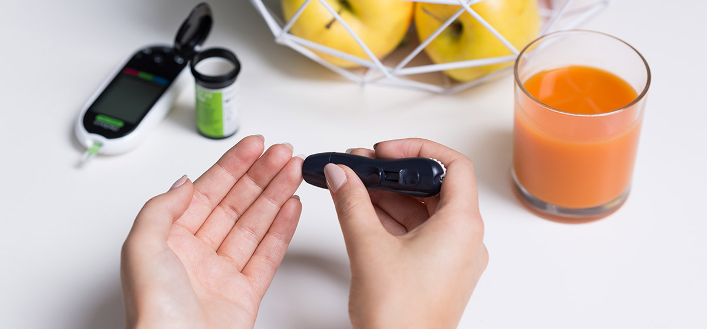

Diabetology & Endocrinology

India is termed as the Diabetic capital of the world. The term "Diabetes" refers to a group of diseases that affects the way our body uses Blood Glucose, commonly called Blood Sugar. Glucose is vital for our health as it is the main source of energy for the cells that make up your muscles and tissues.
Lifecare Hospital provides the "technologically" latest care in the management of Diabetes & Diabetes related complications like Hypertension, Lipid disorders, Obesity, Neuropathy and Nephropathy. The hospital also provides Super-specialist consultations on other Endocrine related problems like Infertility, Growth Problems, problems of Secondary Sexual development, Thyroid & Adrenal Disorders.
Overview
Type 1 diabetes, once known as juvenile diabetes or insulin-dependent diabetes, is a chronic condition in which the pancreas produces little or no insulin. Insulin is a hormone needed to allow sugar (glucose) to enter cells to produce energy.
Different factors, including genetics and some viruses, may contribute to type 1 diabetes. Although type 1 diabetes usually appears during childhood or adolescence, it can develop in adults.
Despite active research, type 1 diabetes has no cure. Treatment focuses on managing blood sugar levels with insulin, diet and lifestyle to prevent complications.
SYMPTOMS
Type 1 diabetes signs and symptoms can appear relatively suddenly and may include:
- Increased thirst
- Frequent urination
- Bed-wetting in children who previously didn't wet the bed during the night
- Extreme hunger
- Unintended weight loss
- Irritability and other mood changes
- Fatigue and weakness
- Blurred vision
When to see a doctor
Consult a doctor if he / she notices any of the above signs and symptoms in him / her or his / her child.
Causes
The exact cause of type 1 diabetes is unknown. Usually, the body's own immune system — which normally fights harmful bacteria and viruses — mistakenly destroys the insulin-producing (islet, or islets of Langerhans) cells in the pancreas. Other possible causes include:
- Genetics
- Exposure to viruses and other environmental factors
The role of insulin
Glucose — a sugar — is a main source of energy for the cells that make up muscles and other tissues.
- Glucose comes from two major sources: food and the liver.
- Sugar is absorbed into the bloodstream, where it enters cells with the help of insulin.
- The liver stores glucose as glycogen.
- When the glucose levels are low, such as when one has not eaten in a while, the liver breaks down the stored glycogen into glucose to keep the glucose levels within a normal range.
In type 1 diabetes, there's no insulin to let glucose into the cells, so sugar builds up in the bloodstream. This can cause life-threatening complications.
Risk factors
Some known risk factors for type 1 diabetes include
- Family history
Anyone with a parent or sibling with type 1 diabetes has a slightly increased risk of developing the condition.
- Genetics
The presence of certain genes indicates an increased risk of developing type 1 diabetes.
- Geography
The incidence of type 1 diabetes tends to increase as one travels away from the equator.
- Age
Although type 1 diabetes can appear at any age, it appears at two noticeable peaks. The first peak occurs in children between 4 and 7 years old, and the second is in children between 10 and 14 years old.
Complications
Over time, type 1 diabetes complications can affect major organs in the body, including heart, blood vessels, nerves, eyes and kidneys. Maintaining a normal blood sugar level can dramatically reduce the risk of many complications.
Eventually, diabetes complications may be disabling or even life-threatening.
- Heart and blood vessel disease
Diabetes dramatically increases the risk of various cardiovascular problems, including coronary artery disease with chest pain (angina), heart attack, stroke, narrowing of the arteries (atherosclerosis) and high blood pressure.
- Nerve damage (neuropathy)
Excess sugar can injure the walls of the tiny blood vessels (capillaries) that nourish the nerves, especially in the legs. This can cause tingling, numbness, burning or pain that usually begins at the tips of the toes or fingers and gradually spreads upward. Poorly controlled blood sugar could cause one to eventually lose all sense of feeling in the affected limbs.
Damage to the nerves that affect the gastrointestinal tract can cause problems with nausea, vomiting, diarrhea or constipation. For men, erectile dysfunction may be an issue.
- Kidney damage (nephropathy)
The kidneys contain millions of tiny blood vessel clusters that filter waste from the blood. Diabetes can damage this delicate filtering system. Severe damage can lead to kidney failure or irreversible end-stage kidney disease, which requires dialysis or a kidney transplant.
- Eye damage
Diabetes can damage the blood vessels of the retina (diabetic retinopathy), potentially causing blindness. Diabetes also increases the risk of other serious vision conditions, such as cataracts and glaucoma.
- Foot damage
Nerve damage in the feet or poor blood flow to the feet increases the risk of various foot complications. If left untreated, cuts and blisters can become serious infections that may ultimately require toe, foot or leg amputation.
- Skin and mouth conditions
Diabetes may leave one more susceptible to infections of the skin and mouth, including bacterial and fungal infections. Gum disease and dry mouth also are more likely.
- Pregnancy complications
High blood sugar levels can be dangerous for both the mother and the baby. The risk of miscarriage, stillbirth and birth defects increases when diabetes is not well-controlled. For the mother, diabetes increases the risk of diabetic ketoacidosis, diabetic eye problems (retinopathy), pregnancy-induced high blood pressure and preeclampsia.
Diagnosis and Treatment
Diagnostic tests include
- Glycated hemoglobin (A1C) test
This blood test indicates the average blood sugar level for the past two to three months. It measures the percentage of blood sugar attached to the oxygen-carrying protein in red blood cells (hemoglobin). The higher the blood sugar levels, the more hemoglobin one will have with sugar attached. An A1C level of 6.5 percent or higher on two separate tests indicates diabetes.
If the A1C test isn't available, or if one has certain conditions that can make the A1C test inaccurate — such as pregnancy or an uncommon form of hemoglobin (hemoglobin variant) — the doctor may use the following tests:
- Random blood sugar test
Blood sample will be taken at a random time and may be confirmed by repeat testing. Blood sugar values are expressed in milligrams per deciliter (mg/dL) or millimoles per liter (mmol/L). Regardless of when one eats, a random blood sugar level of 200 mg/dL (11.1 mmol/L) or higher suggests diabetes, especially when coupled with any of the signs and symptoms of diabetes, such as frequent urination and extreme thirst.
- Fasting blood sugar test
A blood sample will be taken after an overnight fast. A fasting blood sugar level less than 100 mg/dL (5.6 mmol/L) is normal. A fasting blood sugar level from 100 to 125 mg/dL (5.6 to 6.9 mmol/L) is considered prediabetes. If it is 126 mg/dL (7 mmol/L) or higher on two separate tests, then it is diabetes.
If diagnosed with diabetes, the doctor may also run blood tests to check for autoantibodies that are common in type 1 diabetes. These tests help the doctor distinguish between type 1 and type 2 diabetes when the diagnosis is uncertain. The presence of ketones — by products from the breakdown of fat in the urine also suggests type 1 diabetes, rather than type 2.
Treatment
Treatment for type 1 diabetes includes
- Taking insulin
- Carbohydrate, fat and protein counting
- Frequent blood sugar monitoring
- Eating healthy foods
- Exercising regularly and maintaining a healthy weight
Insulin And Other Medications
Anyone who has type 1 diabetes needs lifelong insulin therapy.
Types of insulin are many and include
- Short-acting (regular) insulin
- Rapid-acting insulin
- Intermediate-acting (NPH) insulin
- Long-acting insulin
Insulin cannot be taken orally to lower blood sugar because stomach enzymes will break down the insulin, preventing its action. One needs to receive it either through injections or an insulin pump.
- Injections
One can use a fine needle and syringe or an insulin pen to inject insulin under the skin. Insulin pens look similar to ink pens and are available in disposable or refillable varieties.
If one chooses injections, he / she will likely need a mixture of insulin types to use throughout the day and night. Multiple daily injections that include a combination of a long - acting insulin combined with a rapid-acting insulin more closely mimic the body's normal use of insulin than do older insulin regimens that only required one or two shots a day. A regimen of three or more insulin injections a day has been shown to improve blood sugar levels.
- An insulin pump
One has to wear this device, which is about the size of a cellphone, on the outside of the body. A tube connects a reservoir of insulin to a catheter that is inserted under the skin of the abdomen. This type of pump can be worn in a variety of ways, such as on the waistband, in the pocket or with specially designed pump belts.
There is also a wireless pump option. One can wear a pod that houses the insulin reservoir on the body that has a tiny catheter that is inserted under the skin. The insulin pod can be worn on the abdomen, lower back, or on a leg or an arm. The programming is done with a wireless device that communicates with the pod.
Pumps are programmed to dispense specific amounts of rapid-acting insulin automatically. This steady dose of insulin is known as the basal rate, and it replaces whatever long-acting insulin one had been using.
When you eat, you program the pump with the amount of carbohydrates you're eating and your current blood sugar, and it will give you what's called a bolus dose of insulin to cover your meal and to correct your blood sugar if it's elevated. Some research has found that in some people an insulin pump can be more effective at controlling blood sugar levels than injections. But many people achieve good blood sugar levels with injections, too. An insulin pump combined with a continuous glucose monitoring (CGM) device may provide even tighter blood sugar control.
Lifestyle and home remedies
Careful management of type 1 diabetes can reduce the risk of serious, even life-threatening complications. Consider these tips :
- Make a commitment to manage diabetes :
Take proper medications as recommended. Learn about type 1 diabetes. Make healthy eating and physical activity part of the daily routine. Establish a relationship with a diabetes educator, and seek help from a health care team.
- Identify yourself :
Wear a tag or bracelet that says you have diabetes. Keep a glucagon kit nearby in case of a low blood sugar emergency, and make sure friends and loved ones know how to use it.
- Schedule a yearly physical exam and regular eye exams :
Regular diabetes checkups are not meant to replace yearly physicals or routine eye exams. During the physical, the doctor will look for any diabetes-related complications, as well as screen for other medical problems. The eye care specialist will check for signs of retinal damage, cataracts and glaucoma.
- Keep the vaccinations up to date
High blood sugar can weaken the immune system. Get a flu shot every year. The doctor will likely recommend the pneumonia vaccine, as well.
- Pay attention to the feet
Wash feet daily in lukewarm water. Dry them gently, especially between the toes. Moisturize the feet with lotion. Check the feet every day for blisters, cuts, sores, redness or swelling. Consult the doctor if one has a sore or other foot problem that doesn't heal.
- Keep the blood pressure and cholesterol under control
Eating healthy food and exercising regularly can go a long way toward controlling high blood pressure and cholesterol. Medication may be needed, too.
- If one smokes or uses other forms of tobacco, ask the doctor to help quit
Smoking increases the risk of diabetes complications, including heart attack, stroke, nerve damage and kidney disease. Consult a doctor about ways to stop smoking or to stop using other types of tobacco.
- If consuming alcohol, do so responsibly
Alcohol can cause either high or low blood sugar, depending on how much one drinks and eats at the same time. If one chooses to drink, do so only in moderation and always with a meal. Check the blood sugar levels before going to sleep.
- Take stress seriously
The hormones produced by the body due to prolonged stress may prevent insulin from working properly, which can be stressful and frustrating. Take a step back, and set some limits. Prioritize the tasks. Learn relaxation techniques. Get plenty of sleep.
Doctor List
- Dr. Ajitesh Roy , MD (Gen. Med), DM (Endo) (Chief of Endocrinology)